Disposisi Naskah¶
Pada bagian ini dapat dilihat disposisi masuk dari atasan atau rekan kerja. Begitu pula disposisi keluar yang ditujukan kepada staf anda.
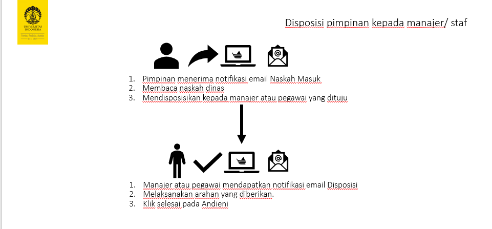Pada bagian ini anda telah menerima naskah masuk dan pilih salah satu naskah yang anda baca dan disposisikan.
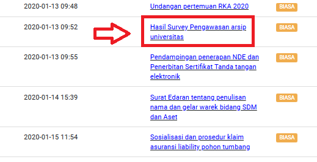Silahkan cek data naskah
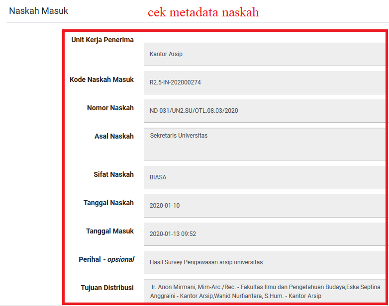jika kurang jelas maka anda dapat mengecek pada file terlampir
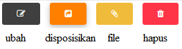Isian Data Disposisi¶
Isian data disposisi yang perlu diisi sebagai berikut
Field |
Penjelasan |
|---|---|
Pengirim |
Otomatis oleh sistem |
Sifat Naskah |
Otomatis oleh sistem, sesuai isian data dari pengirim/ pengentri |
Derajat |
Pilih Segera/ Sangat Segera/ Biasa |
Pilih Jenis Disposisi |
Arsipkan Tindaklanjuti |
Pilih Tujuan Disposisi |
Pilih staf atau pejabat yang dituju, pastikan mereka sudah terdaftar dan menggunakan Andieni |
Catatan |
Tuliskan pesan disposisi untuk manajer/ rekan/ staf anda |
Pencatat |
Otomatis oleh sistem, nama anda akan tercantum |
Lampiran |
Otomatis oleh sistem, yaitu surat yang anda disposisikan |
Unggah |
Pilih file tambahan yang akan jadikan lampiran jika ada |
Kemudian klik -> Simpan & kirim disposisi
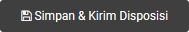Notifikasi Disposisi¶
Manajer/ Rekan kerja/ Staf yang anda disposisikan akan menerima email notifikasi seperti dibawah ini
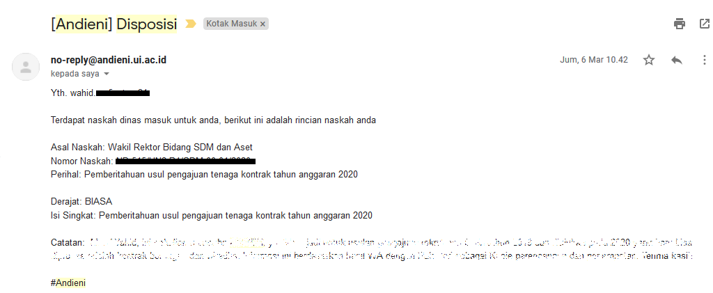Untuk mengecek posisi dimana disposisi tersebut berada pada andieni, maka anda dapat melihat pada menu -> Halaman Naskah kemudian pada bagian Naskah Disposisi
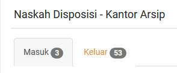Penyelesaian Disposisi¶
Anda dapat melihat disposisi yang masuk kepada anda di bagian Halaman Naskah -> Naskah Disposisi -> Tab Masuk.
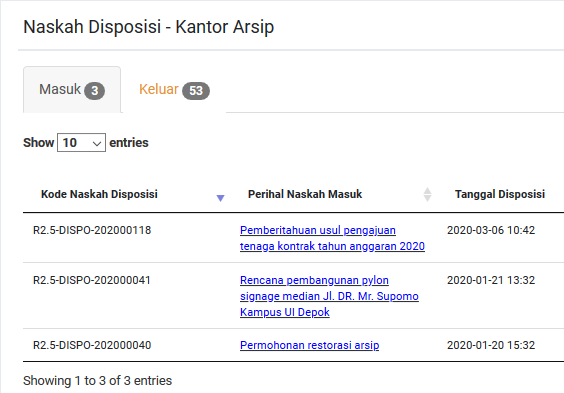Pilih disposisi anda baca arahan yang diberikan atau cek file surat. Apabila disposisi yang diberikan sudah anda kerjakan maka klik Selesai.
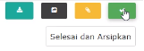Anda dapat melihat update status pada bagian naskah yang telah anda disposisikan.
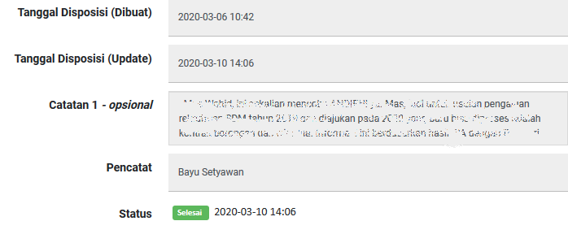Anda dapat pula melihat history dari disposisi ini berasal, Pada contoh ini diperlihatkan naskah berasal
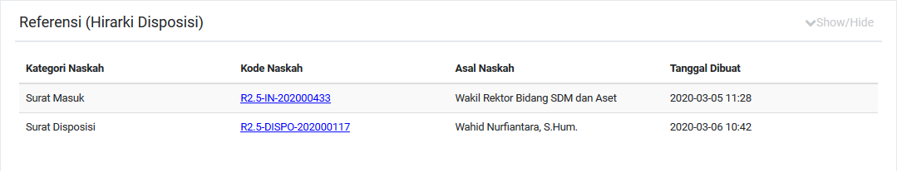Edit Disposisi¶
Anda dapat melakukan edit terhadap disposisi yang telah anda buat. Dengan klik tombol edit pada naskah disposisi anda:
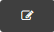Kemudian anda dapat mengubah beberapa data untuk Derajat dan Catatan Disposisi
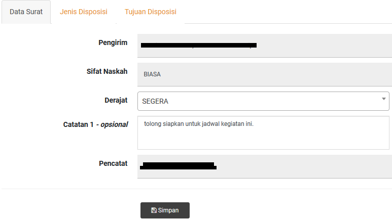Anda dapat mengubah tujuan disposisi pada bagian tab Tujuan Disposisi
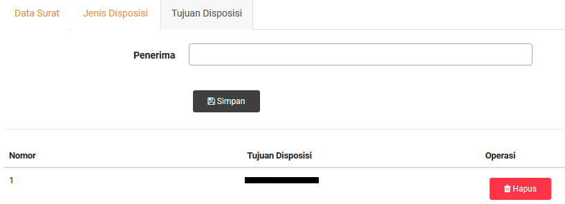